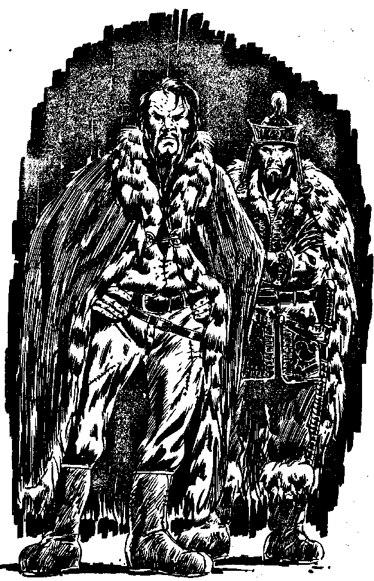

278
At the top of the stairs is a landing leading to a door with gold panels. A blackened staff with a tuft of horsehair hanging down from its top has been driven into the floor before it. A member of the Imperial Guard, dressed immaculately in gold and black lacquered armour is talking to an older man he refers to as 'Noyan' or general, who wears the long wraparound cloak of leather lined with fur called a del, that the mongols wear when not at war or if they cannot afford armour. Your guards repeat their words, but the general insists that he must hear what you have to say to the Khan of Khans. You know your voice will sound like a robot voice if you speak through the Translator. What will you do?
| Speak, saying 'I am a demon from the ice-wastes'? | Turn to 244 |
| Use your blaster on them? | Turn to 165 |
| Force your controlled guards to attack them? | Turn to 228 |